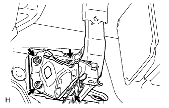
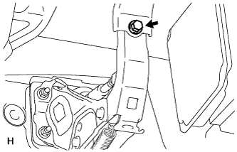
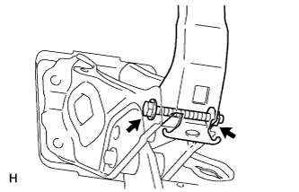
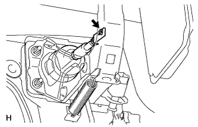

BRAKE PEDAL (for RHD) > INSTALLATION |
| 1. INSTALL BRAKE PEDAL SUPPORT SUB-ASSEMBLY |
 |
Install the brake pedal support sub-assembly with the 4 nuts.
 |
Install the brake pedal support reinforcement set bolt.
 |
Tighten the bolt and nut.
| 2. INSTALL PUSH ROD PIN |
Apply lithium soap base glycol grease to the inner surface of the hole on the brake pedal lever.
 |
Set the master cylinder push rod clevis in place, insert the push rod pin from the outside of the vehicle and then install a new clip.
| 3. INSTALL STOP LIGHT SWITCH ASSEMBLY |
Install the stop light switch (Click here).
Connect the stop light switch connector.
| 4. INSTALL DRIVER SIDE KNEE AIRBAG ASSEMBLY |
 |
Connect the connector.
Install the driver side knee airbag with the 5 bolts.
| 5. INSTALL LOWER NO. 1 INSTRUMENT PANEL FINISH PANEL |
 |
Connect the connectors.
Attach the 2 claws to install the sensor.
 |
Attach the 2 claws to connect the 2 control cables.
 |
Attach the 14 claws to install the finish panel.
Install the 2 bolts.
 |
Attach the 2 claws to close the hole cover.
| 6. INSTALL NO. 1 INSTRUMENT PANEL UNDER COVER SUB-ASSEMBLY |
 |
Connect the connectors.
Attach the 3 claws to install the under cover.
Install the 2 screws.
| 7. INSTALL COWL SIDE TRIM BOARD RH |
 |
Attach the 2 clips to install the trim board.
Install the cap nut.
| 8. INSTALL FRONT DOOR SCUFF PLATE RH |
| 9. CHECK BRAKE PEDAL HEIGHT |
 |
Check the brake pedal height.
 |
Adjust the rod operating adapter length.
Remove the clip and clevis pin.
Loosen the clevis lock nut.
Adjust the rod operating adapter length by turning the pedal push rod clevis.
Tighten the clevis lock nut.
Set the master cylinder push rod clevis in place, insert the push rod pin from the outside of the vehicle and then install a new clip. If the pedal height is incorrect even if the rod operating adapter is adjusted, check that there is no damage in the brake pedal, brake pedal lever, brake pedal support and dash panel.
| 10. CHECK PEDAL FREE PLAY |
 |
Push in the pedal until the beginning of the resistance is felt. Measure the pedal free play.
| 11. CHECK PEDAL RESERVE DISTANCE |
 |
Release the parking brake lever.
With the engine running, depress the pedal and measure the pedal reserve distance as shown in the illustration.